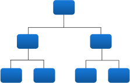
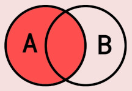

YouTube
Education
Business Analyst Channel
Tutorial videos in Portuguese-🇧🇷 teaching practical business analysis for beginners and experienced practitioners looking to up their game.
Business analyst, electronics hobbyist, nerd
Building open-source educational content for business analytics and related areas, like statistics, data science, and economics.
Tutorial videos in Portuguese-🇧🇷 teaching practical business analysis for beginners and experienced practitioners looking to up their game.
Online calculator for determining minimum required sample sizes for statistical significance, guiding users with clear, structured interpretation phrases to help them find the correct approach.

Web application for generating classification trees using the Chi-squared Automatic Interaction Detection Algorithm (CHAID) in pure client-side JS.

Quick reference guide for SQL, Spark, and Pandas table join syntax, conditions, and relational logic to keep handy near your workstation.
Comprehensive matrix comparing popular online calculators for sample size, statistical significance, and confidence intervals.
AI Generated website that delivers daily micro-insights about business analysis, corporate finance, and strategy. Each day, it dynamically rotates to show a different human-curated message.
Passionate about programming, data science, economics and business. A
fan of LEGO and a Trekkie 🖖. Recently picked up electronics as a
hobby.
M.Sc. in Economics and Finance from Insper, Bachelor of Business
Administration from FEA-USP, and certified Data Scientist.
I've worked for large financial institutions for 20 years and now I'm enjoying a temporary sabbatical (as of 2026).